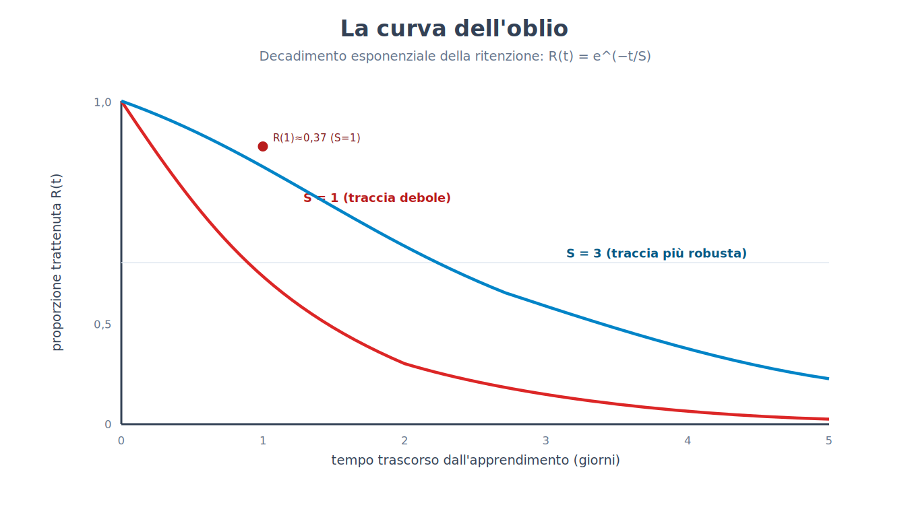
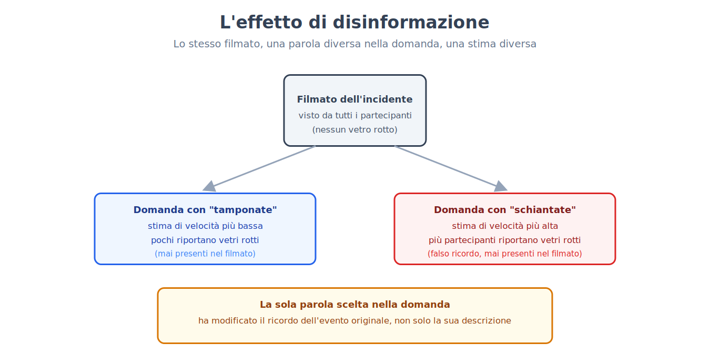
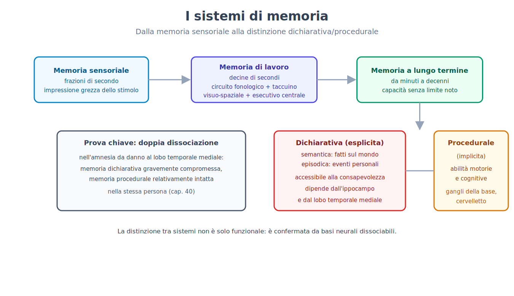
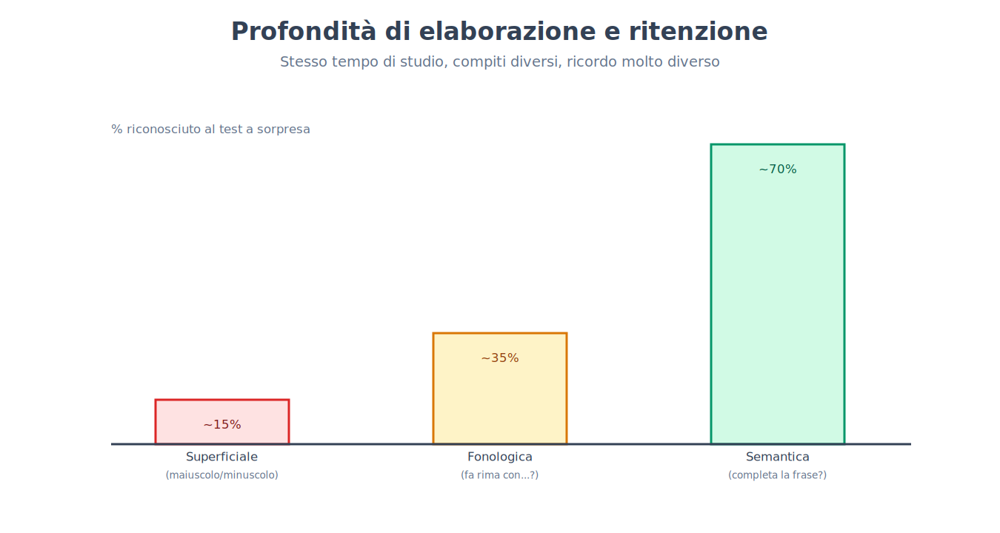
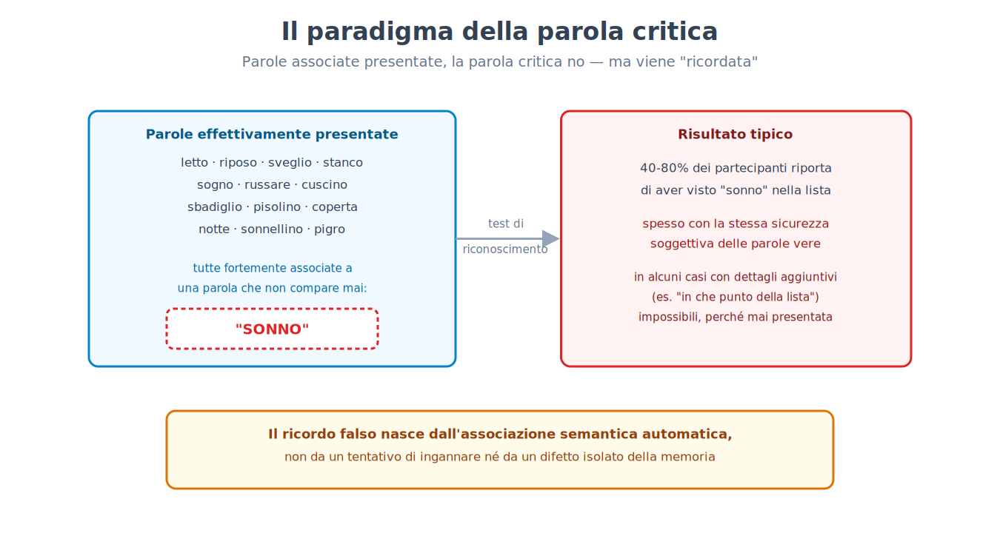
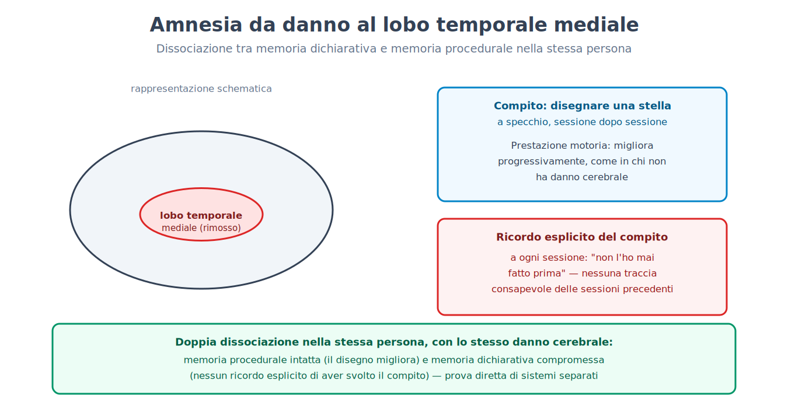

Parte VI. Memoria e apprendimento
Capitolo 34 — I primi esperimenti sulla memoria
[IN DUE PAROLE]
La memoria sembra il territorio meno adatto al metodo sperimentale: come si misura qualcosa che accade dentro la testa di una persona, senza alcun modo di osservarlo direttamente? Questo capitolo espone il primo tentativo riuscito — uno sperimentatore che studiò sé stesso per anni, riuscì a rendere numerica la dimenticanza, e scoprì una regolarità che è ancora oggi alla base di ogni tecnica di apprendimento distanziato nel tempo.
Un problema che sembrava non poter avere una risposta quantitativa
Verso la fine dell'Ottocento, la memoria era già oggetto di riflessione filosofica da millenni, ma non di misura. Il problema non era la mancanza di interesse: era la mancanza di un metodo. Ricordare una poesia, un evento, un volto dipende da un numero enorme di fattori incontrollabili — quanto la persona era interessata, che cosa già sapeva sull'argomento, quante altre volte aveva incontrato contenuti simili. Per misurare la dimenticanza in modo pulito serviva materiale privo di significato precedente: qualcosa che nessuno avesse mai imparato prima, in nessuna forma.
La soluzione fu la costruzione di un materiale artificiale: le sillabe senza senso (nonsense syllables), sequenze consonante-vocale-consonante prive di significato in qualunque lingua nota a chi le studiava (per esempio "ZUP", "REL", "TOK"). Migliaia di combinazioni di questo tipo furono generate, mescolate, e usate come materiale da apprendere a memoria in liste di lunghezza controllata.
[IL DISEGNO DELL'ESPERIMENTO]
Il metodo, applicato dallo sperimentatore (Hermann Ebbinghaus, primo studio sistematico sulla memoria, 1885) su sé stesso in migliaia di sedute nell'arco di diversi anni, funzionava così: una lista di sillabe senza senso veniva letta ad alta voce a ritmo costante, ripetendo l'intera lista finché non poteva essere recitata perfettamente a memoria una volta. Il numero di ripetizioni necessarie per raggiungere questo criterio veniva registrato. Dopo un intervallo di tempo controllato — che poteva variare da venti minuti a un mese — la stessa lista veniva riappresa fino allo stesso criterio, e si registrava di nuovo il numero di ripetizioni necessarie. La differenza tra le due misure è il risparmio (savings): se la lista era stata dimenticata per intero, il numero di ripetizioni per riapprenderla sarebbe stato identico al primo apprendimento (risparmio zero); se qualcosa era rimasto, la riapprensione sarebbe stata più rapida, in proporzione a quanto era rimasto. Il risparmio è quindi una misura indiretta ma quantitativa di quanto è stato trattenuto, anche quando la persona non riesce a recitare consapevolmente nulla della lista originale.
Ripetendo questa procedura a intervalli di tempo crescenti, emerse una curva estremamente regolare: la curva dell'oblio (forgetting curve). La perdita di informazione non è lineare nel tempo: è rapidissima nelle prime ore — gran parte del risparmio scompare già nel primo giorno — per poi rallentare progressivamente, restando quasi piatta dopo alcune settimane. Il materiale che sopravvive a un mese tende a restare sostanzialmente stabile per molto più tempo.
[FORMULA]
Una descrizione approssimata, ma utile, della curva dell'oblio è un decadimento esponenziale:
R(t) = e^(−t / S)
Dove:
• R(t) è la proporzione di materiale trattenuto (misurata, per esempio, tramite il risparmio) al tempo t dall'apprendimento originale.
• t è il tempo trascorso dall'apprendimento, in una qualunque unità coerente (qui: giorni).
• S è la forza della traccia mnestica, un parametro che rappresenta quanto stabilmente l'informazione è stata codificata: più S è grande, più lento è il decadimento.
• e è la base dei logaritmi naturali (≈2,718).
Esempio di calcolo. Con una traccia di forza S = 1 giorno (un apprendimento debole, come una lista letta una sola volta), dopo t = 1 giorno la proporzione trattenuta è:
R(1) = e^(−1/1) = e^(−1) ≈ 0,37
Poco più di un terzo resta dopo un solo giorno. Dopo t = 3 giorni, con la stessa forza della traccia:
R(3) = e^(−3/1) = e^(−3) ≈ 0,05
Circa il 5% resta dopo tre giorni: il grosso della perdita è avvenuto già nelle prime ventiquattr'ore, un pattern che il modello coglie bene nel primo giorno. Il modello esponenziale descrive tuttavia bene solo la caduta iniziale: nei dati reali la coda è più lenta, e una funzione di potenza si adatta meglio sul lungo periodo. Un apprendimento più robusto (per esempio ottenuto ripetendo il materiale più volte, o distribuendo le ripetizioni nel tempo) corrisponde a un valore di S più alto, che allunga la coda della curva senza cambiarne la forma generale.

Perché ripetere una sola volta non basta, e perché distanziare le ripetizioni funziona meglio che accumularle
Lo stesso impianto sperimentale permise di isolare un secondo risultato, altrettanto solido e con conseguenze pratiche dirette: a parità di numero totale di ripetizioni, distribuire le ripetizioni nel tempo (per esempio una al giorno per una settimana) produce una ritenzione a lungo termine sensibilmente migliore che concentrarle tutte in un'unica sessione (per esempio sette ripetizioni di fila). Questo risultato — l'effetto di distanziamento (spacing effect) — è tra i più replicati dell'intera psicologia cognitiva, e resta valido attraverso materiali molto diversi: liste di parole, fatti storici, vocabolario di una lingua straniera, procedure motorie.
[NUMERI]
In studi di laboratorio controllati, la differenza di ritenzione a distanza di settimane tra apprendimento distanziato e apprendimento concentrato (a parità di tempo totale di studio) è in molti studi di laboratorio di diversi punti percentuali, fino a oltre dieci, di materiale in più recuperato correttamente; l'intervallo di distanziamento migliore dipende dal tempo per cui si vuole ricordare, e cresce con esso. La spiegazione più accreditata oggi non è un singolo meccanismo, ma una combinazione: ogni ripetizione distanziata richiede uno sforzo di recupero leggermente maggiore (perché la traccia si è nel frattempo un poco indebolita), e questo sforzo di recupero rinforza la traccia più di una ripetizione immediata, quando l'informazione è ancora del tutto accessibile e quindi richiede poco lavoro cognitivo per essere ripetuta.
Il principio non era del tutto sconosciuto prima di questi esperimenti — insegnanti e allievi lo avevano probabilmente intuito per secoli — ma la sua prima quantificazione rigorosa, con una curva riproducibile e un metodo esplicito per misurarla, è ciò che ha permesso di costruire su di esso: dalle tecniche di ripetizione distanziata usate oggi nell'apprendimento delle lingue ai software che programmano automaticamente la ripetizione successiva in base a quanto tempo è già passato dall'ultima.
[ATTENZIONE AL SALTO]
Le sillabe senza senso furono scelte apposta per eliminare il significato — ma questo significa anche che i risultati ottenuti con questo materiale non si trasferiscono automaticamente a materiale ricco di significato, organizzato, collegato a conoscenze pregresse. La forma generale della curva (rapida all'inizio, poi più lenta) si ritrova anche con materiale significativo, ma i tempi assoluti sono diversi, spesso molto più lenti, perché il significato offre appigli multipli per il recupero che le sillabe senza senso non possono offrire. Il capitolo 3 ha già introdotto questo problema in termini generali, parlando di validità ecologica degli esperimenti di laboratorio: qui è un esempio diretto e concreto di quella tensione, non un'eccezione isolata.
[IL PUNTO CHIAVE DEL CAPITOLO]
• Le sillabe senza senso permisero la prima misura quantitativa della dimenticanza, tramite il metodo del risparmio nella riapprensione.
• La curva dell'oblio descrive un decadimento rapido nelle prime ore, seguito da un progressivo rallentamento — approssimabile con un decadimento esponenziale, R(t) = e^(−t/S).
• L'effetto di distanziamento mostra che ripetizioni distribuite nel tempo producono una ritenzione a lungo termine superiore a un pari numero di ripetizioni concentrate, con un vantaggio che in molti studi va da pochi a oltre dieci punti percentuali di materiale trattenuto in più.
• I risultati ottenuti con materiale privo di significato non si trasferiscono automaticamente, in valore assoluto, a materiale significativo — un limite di validità ecologica da tenere presente, non un difetto del metodo.
Capitolo 35 — La memoria come ricostruzione
[IN DUE PAROLE]
L'intuizione comune tratta la memoria come una registrazione: un evento accade, viene "salvato", e ricordarlo significa "riaprire il file". Questo capitolo espone perché questa immagine è sbagliata nella sostanza, non solo nei dettagli: ogni atto di recupero è un processo attivo di ricostruzione, che usa conoscenze generali per riempire le lacune inevitabili di una traccia incompleta — e che per questo può introdurre distorsioni sistematiche, prevedibili, non casuali.
Uno schema può cambiare un ricordo senza che la persona se ne accorga
Il primo studio sistematico sulla natura ricostruttiva (Frederic Bartlett, studio sulla riproduzione seriale di una storia, 1932; il procedimento era informale, senza analisi statistica, e le distorsioni risultarono minori quando si insisteva sull'accuratezza) usò come materiale una storia tratta dal folclore di una cultura lontana da quella dei partecipanti, ricca di elementi che non si accordavano con le loro aspettative narrative abituali (eventi soprannaturali non spiegati, una struttura non lineare, nomi propri non familiari).
[IL DISEGNO DELL'ESPERIMENTO]
Ai partecipanti la storia veniva letta due volte, e veniva poi chiesto di riprodurla a memoria a intervalli crescenti — da pochi minuti fino a diversi mesi dopo, in alcuni casi ripetendo la riproduzione più volte con la stessa persona (riproduzione seriale ripetuta). Confrontando le versioni successive con l'originale, emerse un pattern coerente di distorsioni, non casuali ma sistematiche: gli elementi non familiari o incoerenti con lo schema (schema) — la struttura di aspettative preesistenti su come una storia "dovrebbe" essere fatta — venivano omessi, semplificati, o trasformati in qualcosa di più familiare e coerente con la cultura del partecipante. Un dettaglio soprannaturale non spiegato tendeva a scomparire nelle riproduzioni successive, oppure a ricevere una spiegazione razionale mai presente nell'originale, aggiunta dal partecipante stesso senza consapevolezza di averlo fatto.
Questo risultato — noto come effetto di razionalizzazione all'interno di un più ampio effetto di ricostruzione schematica — mostrò che il ricordo non era né una copia sbiadita né una riproduzione che resta fedele all'originale: era un racconto attivamente ricostruito a ogni riproduzione, usando lo schema disponibile per colmare le lacune e rendere la storia più sensata secondo le proprie categorie, anche a costo di allontanarsi sistematicamente dai fatti.
Le domande possono creare ricordi che non sono mai accaduti
Un secondo filone di ricerca (Elizabeth Loftus e John Palmer, esperimento sull'effetto di disinformazione, 1974), sviluppato decenni più tardi con metodi molto più controllati, mostrò che la ricostruzione può essere influenzata non solo da schemi generali preesistenti, ma da informazione specifica introdotta dopo l'evento — un fenomeno chiamato effetto di disinformazione (misinformation effect).
[IL DISEGNO DELL'ESPERIMENTO]
Ai partecipanti viene mostrato un breve filmato di un incidente stradale. Subito dopo, rispondono a domande sull'accaduto: a metà dei partecipanti viene chiesto "a che velocità andavano le auto quando si sono scontrate?", all'altra metà la stessa domanda ma con un verbo diverso, per esempio "quando si sono tamponate?" o "quando si sono schiantate?". La sola scelta del verbo nella domanda — un dettaglio linguistico apparentemente irrilevante, non un'informazione falsa dichiarata come tale — modifica sistematicamente la stima di velocità riportata: verbi che implicano un impatto più violento producono stime di velocità più alte. In una variante successiva, ai partecipanti a cui era stato chiesto con il verbo "schiantarsi" venne poi chiesto, una settimana dopo, se nel filmato avessero visto vetri rotti (il filmato non ne mostrava): questo gruppo riportò di aver visto vetri rotti in proporzione significativamente maggiore rispetto al gruppo a cui era stato chiesto con un verbo più neutro.

L'informazione fuorviante introdotta dopo l'evento — nella domanda stessa, non in un tentativo esplicito di ingannare — viene incorporata nel ricordo dell'evento originale, al punto da produrre il ricordo di dettagli mai realmente osservati. Questo non significa che la memoria sia inaffidabile in ogni circostanza allo stesso modo: significa che è suscettibile a un tipo specifico e prevedibile di distorsione, particolarmente rilevante ogni volta che qualcuno viene interrogato ripetutamente sullo stesso evento, con domande formulate in modi leggermente diversi — la situazione tipica di un interrogatorio di polizia o di una testimonianza in tribunale.
[CONVINZIONE DIFFUSA]
L'idea che la memoria funzioni come una videocamera — che registri fedelmente ogni dettaglio di un'esperienza, disponibile per essere "riguardato" con la giusta tecnica (per esempio l'ipnosi) — resta molto diffusa, anche tra professionisti che lavorano con testimonianze. I dati sperimentali disponibili contraddicono questa immagine in modo netto: la memoria di un evento è ricostruita ogni volta che viene recuperata, usando sia la traccia originale (che può essere incompleta o degradata) sia informazione successiva, schemi generali, e aspettative — con il risultato che dopo interrogatori ripetuti, suggestioni o il passare del tempo la sicurezza soggettiva con cui una persona riporta un ricordo non è un indicatore affidabile della sua accuratezza oggettiva (nelle condizioni non contaminate, al primo test, la fiducia iniziale è invece un indicatore piuttosto buono): un ricordo completamente ricostruito e falso può essere riportato con la stessa, o maggiore, sicurezza soggettiva di un ricordo accurato.
Il collegamento tra ricostruzione e produzione di ricordi interamente falsi — non solo distorti nei dettagli, ma inventati nella sostanza — sarà trattato per intero nel capitolo 39, con le relative implicazioni per la testimonianza giudiziaria e per le pratiche terapeutiche.
[IL PUNTO CHIAVE DEL CAPITOLO]
• La memoria non è una registrazione fedele ma un processo di ricostruzione attiva, che avviene a ogni singolo atto di recupero, non solo al momento della codifica.
• Gli schemi preesistenti guidano la ricostruzione, producendo omissioni e razionalizzazioni sistematiche degli elementi incoerenti con le aspettative culturali del ricordante.
• L'effetto di disinformazione mostra che informazione introdotta dopo l'evento, anche tramite la sola formulazione di una domanda, può essere incorporata nel ricordo dell'evento originale.
• Dopo suggestione o ripetizioni, la sicurezza soggettiva con cui un ricordo viene riportato non è un indicatore affidabile della sua accuratezza — un principio ripreso per intero nel capitolo 39 a proposito dei falsi ricordi.
Capitolo 36 — Magazzini e sistemi
[IN DUE PAROLE]
"Memoria" non è un'unica facoltà, ma un termine ombrello per sistemi diversi, con proprietà diverse e — come mostrato da casi clinici che il capitolo 40 tratterà per intero — basi neurali almeno in parte separabili. Questo capitolo espone l'architettura di questi sistemi: quanto a lungo trattengono informazione, quanta ne possono contenere, e quale distinzione separa il sapere che cosa dal sapere come.
Tre magazzini con proprietà molto diverse
Un primo modello, influente per decenni, distingue la memoria in base a quanto a lungo l'informazione vi permane. La memoria sensoriale (sensory memory) trattiene un'impressione grezza dello stimolo sensoriale per una frazione di secondo — sufficiente a percepire il movimento continuo in una serie di fotogrammi, o a "sentire" ancora per un istante un suono appena terminato. La memoria a breve termine (short-term memory), o più propriamente memoria di lavoro (working memory) nella sua concezione più recente, trattiene una quantità limitata di informazione per decine di secondi, a meno che non venga attivamente ripetuta o elaborata. La memoria a lungo termine (long-term memory) trattiene informazione per periodi che vanno da minuti a decenni, con una capacità che, per quanto se ne sa, non ha un limite pratico misurabile.
La capacità della memoria a breve termine è stata per lungo tempo descritta con la cifra approssimativa di "sette elementi più o meno due" — il numero di cifre, lettere o parole non collegate che una persona può ripetere immediatamente dopo averle sentite una sola volta. Ricerche successive hanno rivisto questa stima verso il basso, indicando un limite più vicino a quattro elementi quando si esclude la possibilità di raggruppare l'informazione in unità più grandi (chunking): già Miller, nel lavoro del 1956 da cui nasce la cifra di sette, osservava che il limite riguardava unità raggruppabili (chunk), non elementi singoli; la stima di circa quattro, proposta da Cowan nel 2001, resta peraltro dibattuta (tra tre e cinque, secondo gli autori). Il chunking stesso — raggruppare singoli elementi in unità significative più grandi (per esempio, ricordare un numero di telefono come tre blocchi anziché dieci cifre isolate) — resta comunque il modo più efficace per aumentare la quantità effettiva di informazione trattenibile, senza cambiare il numero di "slot" disponibili.
La memoria di lavoro non è un magazzino passivo
Il modello di memoria a breve termine come semplice magazzino temporaneo è stato progressivamente sostituito da modelli di memoria di lavoro, che la descrivono come un sistema attivo con componenti specializzate che manipolano l'informazione, non solo la trattengono. Un modello influente (Alan Baddeley e Graham Hitch, 1974, con revisioni successive) distingue un circuito fonologico (phonological loop), dedicato all'informazione verbale e uditiva, un taccuino visuo-spaziale (visuospatial sketchpad), dedicato all'informazione visiva e spaziale, e un esecutivo centrale (central executive) che coordina i due sistemi e ne governa l'allocazione delle risorse attentive — collegandosi direttamente ai meccanismi di attenzione selettiva trattati nel capitolo 30. Revisioni successive del modello hanno aggiunto un buffer episodico (episodic buffer), un sistema che integra informazione dai due sottosistemi con la memoria a lungo termine in rappresentazioni temporanee più ricche — necessario, per esempio, per comprendere una frase complessa che richiede di tenere insieme suono, significato e contesto mentre viene ascoltata.
[IL DISEGNO DELL'ESPERIMENTO]
Una delle prove più dirette a favore di componenti separate per informazione verbale e visuo-spaziale è il compito duale: chiedere a una persona di eseguire due compiti contemporaneamente, uno verbale (per esempio ripetere ad alta voce una sequenza di numeri) e uno visuo-spaziale (per esempio seguire con lo sguardo un punto che si muove su uno schermo, mantenendo una rappresentazione mentale della sua traiettoria). Se i due compiti condividessero la stessa risorsa limitata, eseguirli insieme dovrebbe peggiorare le prestazioni su entrambi, in modo comparabile a quando si combinano due compiti dello stesso tipo (per esempio due compiti verbali). I risultati mostrano sistematicamente il pattern opposto: due compiti dello stesso tipo (verbale con verbale, spaziale con spaziale) interferiscono fortemente tra loro, mentre un compito verbale e uno spaziale eseguiti insieme si danneggiano reciprocamente molto meno — un'evidenza diretta di risorse almeno parzialmente separate, non di un unico magazzino condiviso.
Sapere che cosa e sapere come sono sistemi diversi
Una seconda distinzione, ortogonale alla prima, separa la memoria a lungo termine in base al tipo di contenuto. La memoria dichiarativa (declarative memory), o esplicita, riguarda fatti ed eventi accessibili alla consapevolezza cosciente e riportabili verbalmente: comprende a sua volta la memoria semantica (semantic memory), per conoscenze generali sul mondo prive di un contesto specifico di apprendimento (sapere che Roma è la capitale d'Italia, senza ricordare quando lo si è appreso), e la memoria episodica (episodic memory), per eventi specifici collocati nel tempo e nello spazio dell'esperienza personale (ricordare una particolare cena di compleanno). La memoria procedurale (procedural memory), o implicita, riguarda invece abilità motorie e cognitive apprese attraverso la pratica — andare in bicicletta, digitare su una tastiera senza guardare i tasti — accessibili solo attraverso l'esecuzione, non attraverso il racconto verbale: chi sa andare in bicicletta raramente riesce a descrivere a parole come mantiene l'equilibrio.
La prova più forte di questa distinzione viene da casi clinici di amnesia grave, in cui la capacità di formare nuovi ricordi dichiarativi risulta compromessa in modo drammatico mentre la capacità di apprendere nuove abilità motorie resta relativamente intatta — la stessa persona che non ricorda di aver mai eseguito un compito motorio prima può comunque migliorare progressivamente in quel compito, seduta dopo seduta, senza alcuna consapevolezza esplicita del miglioramento. Il capitolo 40 tratterà per intero questi casi e ciò che hanno insegnato sull'organizzazione neurale della memoria.

[IL PUNTO CHIAVE DEL CAPITOLO]
• La memoria si articola in sistemi con proprietà temporali diverse: sensoriale (frazioni di secondo), di lavoro (decine di secondi senza ripetizione attiva), a lungo termine (da minuti a decenni).
• La stima classica di "sette elementi più o meno due" per la capacità della memoria di lavoro è stata rivista verso il basso (circa quattro elementi non raggruppati); il chunking resta il modo principale per aumentare l'informazione trattenibile.
• I modelli attuali descrivono la memoria di lavoro come un sistema attivo con componenti separate (circuito fonologico, taccuino visuo-spaziale, esecutivo centrale, buffer episodico), non come un unico magazzino passivo.
• La memoria a lungo termine si distingue in dichiarativa (fatti ed eventi, accessibile alla consapevolezza) e procedurale (abilità, accessibile solo attraverso l'esecuzione) — una distinzione con solide basi neurali, trattata per intero nel capitolo 40.
Capitolo 37 — Codifica, consolidamento, recupero
[IN DUE PAROLE]
Perché alcune esperienze restano impresse per decenni e altre svaniscono in pochi minuti? Questo capitolo espone che cosa rende una traccia mnestica più o meno duratura al momento della codifica, come una traccia inizialmente fragile si stabilizzi nel tempo, e perché il modo in cui un'informazione viene recuperata può, paradossalmente, rafforzarla più che il semplice ripasso.
Non tutta l'elaborazione produce lo stesso ricordo
Un principio centrale, oggi ben consolidato, è che la qualità della ritenzione dipende meno dal tempo passato a studiare un materiale e più dal tipo di elaborazione a cui viene sottoposto — la cosiddetta profondità di elaborazione (levels of processing; Fergus Craik e Robert Lockhart, 1972). Elaborare uno stimolo a livello superficiale (per esempio, giudicare se una parola è scritta in maiuscolo o minuscolo) produce una traccia debole; elaborarlo a livello fonologico (giudicare se fa rima con un'altra parola) produce una traccia intermedia; elaborarlo a livello semantico (giudicare se si adatta al significato di una frase, collegandolo attivamente a conoscenze già possedute) produce la traccia più duratura, a parità di tempo totale dedicato al compito.
[IL DISEGNO DELL'ESPERIMENTO]
Ai partecipanti viene presentata una lista di parole, con un compito diverso per ciascuna parola assegnato in modo casuale: per alcune parole devono solo giudicare se sono scritte in maiuscolo; per altre, se fanno rima con una parola data; per altre ancora, se completano correttamente il senso di una frase. Ai partecipanti non viene detto che dovranno poi ricordare le parole: il compito di elaborazione è presentato come l'unico obiettivo (apprendimento incidentale). In un test di riconoscimento a sorpresa, somministrato dopo la lista, le parole elaborate semanticamente vengono riconosciute correttamente in proporzione nettamente superiore rispetto a quelle elaborate solo a livello grafico o fonologico — nonostante nessun gruppo avesse avuto l'intenzione esplicita di memorizzare nulla. La ritenzione dipende dalla profondità del trattamento cognitivo, non dall'intenzione dichiarata di ricordare.
Un secondo principio, complementare, è che il recupero funziona meglio quando le condizioni al momento del recupero somigliano a quelle presenti al momento della codifica — la dipendenza dal contesto (context-dependent memory). Materiale appreso in un certo ambiente fisico, o in un certo stato interno (per esempio un particolare livello di attivazione emotiva), viene recuperato con maggiore facilità in un ambiente o in uno stato simile — un principio con implicazioni dirette per la pratica dello studio (variare il contesto di studio riduce la dipendenza da un singolo ambiente) e per la testimonianza (riportare un testimone sul luogo di un evento può facilitarne il ricordo, con le dovute cautele sul rischio di suggestione già discusso nel capitolo 35).
Ricordare rafforza più che ripassare
Un risultato che ha cambiato in modo sostanziale le raccomandazioni pratiche sullo studio è l'effetto del test (testing effect): sottoporsi a un tentativo di recupero attivo dell'informazione (per esempio rispondere a una domanda a risposta aperta) produce una ritenzione a lungo termine superiore rispetto a un pari tempo speso a rileggere passivamente lo stesso materiale — anche quando, al momento del test iniziale, la persona sbaglia la risposta e deve poi vederla corretta.
[NUMERI]
In studi che confrontano direttamente le due strategie a parità di tempo totale investito, il vantaggio dell'effetto del test rispetto alla sola rilettura, misurato a distanza di una settimana o più dallo studio iniziale, è di dimensione media nelle meta-analisi (g intorno a 0,5), più grande con feedback e a distanza di giorni; in un esperimento classico, circa il 61% di materiale ricordato dopo una settimana con la prova di recupero contro circa il 40% con la rilettura (a test molto ravvicinati, invece, la rilettura può vincere). Il vantaggio tende a crescere quanto più lungo è l'intervallo tra studio e verifica finale — lo stesso pattern generale già incontrato a proposito dell'effetto di distanziamento nel capitolo 34, di cui l'effetto del test condivide in parte il meccanismo: il recupero attivo, come la ripetizione distanziata, richiede uno sforzo cognitivo che la sola rilettura non richiede, e questo sforzo rafforza la traccia.
Infine, la fase tra codifica e recupero non è un intervallo passivo di semplice permanenza della traccia. Il consolidamento (consolidation) è il processo, che richiede tempo — ore per il consolidamento a livello sinaptico, mesi o anni per il consolidamento a livello dei sistemi cerebrali coinvolti, come già anticipato a proposito del ruolo del sonno nel capitolo 26 — attraverso cui una traccia inizialmente fragile e vulnerabile all'interferenza diventa progressivamente più stabile.
Il consolidamento a livello sinaptico ha un correlato cellulare ben studiato: il potenziamento a lungo termine (LTP), incontrato nel capitolo 25. Nella sua fase precoce l'LTP dura da una a poche ore e non richiede la sintesi di nuove proteine; la fase tardiva, molto più duratura, la richiede, e nei roditori bloccare la sintesi proteica subito dopo l'apprendimento impedisce al ricordo di stabilizzarsi. Il test causale più noto riguarda il recettore NMDA del capitolo 25: ratti a cui veniva somministrato un farmaco che lo blocca durante l'addestramento in un labirinto acquatico (Morris e colleghi, 1986) non imparavano a localizzare la piattaforma nascosta, pur nuotando e vedendo normalmente. Il risultato mostra che questi processi sono necessari per quel tipo di apprendimento; non mostra che l'LTP sia l'unico meccanismo della memoria, e l'estensione all'essere umano resta in gran parte inferenziale. Un risultato più recente e per certi versi sorprendente è che il consolidamento non è un processo a senso unico e definitivo: quando un ricordo già consolidato viene riattivato (per esempio recuperandolo consapevolmente, o anche solo venendo esposti a un elemento fortemente associato ad esso), la traccia può tornare temporaneamente in uno stato labile, simile a quello della codifica iniziale, per poi dover essere riconsolidata (reconsolidation). Durante questa finestra di labilità, la traccia può essere modificata — rafforzata, indebolita, o in alcuni studi su animali persino cancellata farmacologicamente — in un modo che non sarebbe possibile su un ricordo che non sia stato appena riattivato.
[QUESTIONE CONTROVERSA]
Il fenomeno della riconsolidazione, ben documentato in studi su animali con interventi farmacologici precisi al momento della riattivazione, ha sollevato grandi aspettative per il trattamento di ricordi traumatici negli esseri umani: se un ricordo diventa temporaneamente modificabile ogni volta che viene riattivato, in linea di principio potrebbe essere indebolito in modo mirato durante quella finestra. I tentativi di tradurre questo risultato in trattamenti clinici affidabili per l'essere umano hanno però prodotto risultati molto più incostanti che negli studi animali: non è chiaro quali condizioni (dose, tempistica, tipo di riattivazione) siano necessarie per aprire la finestra di labilità in modo affidabile in un cervello umano, e diversi tentativi di replicazione dei primi risultati promettenti non hanno raggiunto gli stessi effetti. Il meccanismo di base — che la riattivazione può rendere un ricordo temporaneamente modificabile — è oggi considerato solido; la sua applicabilità clinica pratica e affidabile resta, allo stato attuale della ricerca, un obiettivo non ancora raggiunto piuttosto che una tecnica consolidata.

[IL PUNTO CHIAVE DEL CAPITOLO]
• La profondità di elaborazione al momento della codifica (superficiale, fonologica, semantica) determina la qualità della ritenzione più del tempo totale dedicato allo studio.
• Il recupero funziona meglio quando il contesto al momento del recupero somiglia a quello della codifica (dipendenza dal contesto).
• L'effetto del test mostra che il recupero attivo rafforza la memoria più della rilettura passiva, con un effetto di dimensione media, più grande a distanza di giorni.
• Il consolidamento non è definitivo: un ricordo riattivato può tornare temporaneamente labile e richiedere una riconsolidazione, un fenomeno solido negli studi animali ma non ancora tradotto in un'applicazione clinica affidabile per l'essere umano.
Capitolo 38 — L'oblio e i suoi meccanismi
[IN DUE PAROLE]
Dimenticare non è un unico fenomeno con una sola causa. Questo capitolo espone tre meccanismi principali, accanto al decadimento semplice, attraverso cui l'informazione diventa inaccessibile o viene attivamente resa tale — e riprende, con strumenti empirici diversi, un problema già incontrato nel capitolo 10 a proposito della rimozione psicoanalitica.
Interferenza, non solo decadimento
Per gran parte del Novecento, la spiegazione dominante dell'oblio non fu il semplice decadimento (decay) della traccia con il passare del tempo, ma l'interferenza (interference): la perdita di accessibilità di un ricordo causata dalla presenza di altri ricordi, non dal tempo in sé. Si distinguono due direzioni: l'interferenza proattiva (proactive interference), in cui apprendimenti precedenti disturbano il ricordo di materiale appreso più di recente (per esempio, faticare a ricordare un nuovo numero di telefono perché il vecchio continua a intromettersi), e l'interferenza retroattiva (retroactive interference), in cui apprendimenti successivi disturbano il ricordo di materiale appreso in precedenza (imparare una seconda lingua straniera che rende temporaneamente più difficile richiamare vocaboli della prima).
[IL DISEGNO DELL'ESPERIMENTO]
Un disegno classico per isolare l'interferenza retroattiva confronta due gruppi che imparano la stessa lista A di coppie di parole associate. Un gruppo impara poi una seconda lista B, con gli stessi stimoli ma risposte diverse (per esempio, se nella lista A la coppia era "tavolo-sedia", nella lista B potrebbe essere "tavolo-lampada"); l'altro gruppo, nello stesso intervallo di tempo, svolge un compito non collegato (per esempio un test di calcolo). Al momento del test finale sulla lista A originale, il gruppo che ha appreso la lista B interferente mostra un ricordo significativamente peggiore rispetto al gruppo di controllo, nonostante entrambi i gruppi abbiano avuto lo stesso intervallo di tempo dall'apprendimento originale al test — l'unica differenza è che cosa hanno fatto in quell'intervallo, non quanto tempo è passato.
Un secondo meccanismo, distinto dall'interferenza tra tracce diverse, è l'inibizione da recupero (retrieval-induced forgetting; Michael Anderson, Robert Bjork e Elizabeth Bjork, 1994): il semplice atto di recuperare con successo un ricordo può rendere temporaneamente più difficile recuperare altri ricordi collegati, associati alla stessa categoria o allo stesso contesto — come se il recupero selettivo di un elemento sopprimesse attivamente i suoi competitori, anziché limitarsi a rafforzare l'elemento recuperato senza effetti sugli altri.
La soppressione diretta di un ricordo indesiderato
Un terzo meccanismo, più controverso ma sostenuto da molti dati sperimentali ma con una replicabilità mista (alcuni laboratori non hanno riprodotto l'effetto), è la soppressione diretta (directed suppression; paradigma "pensa/non pensare" di Michael Anderson e Collin Green, 2001) del recupero: la possibilità di impedire attivamente, tramite uno sforzo intenzionale, che un ricordo specifico raggiunga la consapevolezza quando viene incontrato uno spunto che normalmente lo evocherebbe.
[IL DISEGNO DELL'ESPERIMENTO]
Ai partecipanti viene insegnata un'associazione tra coppie di parole (per esempio "ordalia-scarafaggio"). Successivamente, viene presentata solo la prima parola della coppia (lo spunto), con un'istruzione diversa a seconda della condizione: in alcune prove, ai partecipanti viene chiesto di pensare attivamente alla parola associata (ricordare); in altre, viene chiesto esplicitamente di evitare che quella parola venga in mente (sopprimere), senza sostituirla con nient'altro. In un test finale di memoria per l'intera lista, le coppie nella condizione di soppressione vengono ricordate significativamente peggio rispetto sia alle coppie ricordate attivamente sia — punto cruciale del disegno — rispetto a coppie mai riattivate affatto durante la fase intermedia. Il solo fatto di aver ricevuto lo spunto e di aver esercitato uno sforzo per non pensare alla risposta associata produce un effetto di oblio misurabile, superiore al semplice non-ripasso.
Studi di neuroimmagine condotti durante questo compito mostrano un pattern coerente con un meccanismo di controllo attivo: durante la soppressione si osserva un aumento di attivazione in regioni prefrontali associate al controllo cognitivo, accompagnato da una riduzione di attivazione nelle regioni del lobo temporale mediale (incluso l'ippocampo) tipicamente coinvolte nel recupero — un pattern compatibile con l'idea che un meccanismo di controllo dall'alto verso il basso inibisca attivamente il processo di recupero stesso, non solo la sua espressione comportamentale.
[REGGE ANCORA?]
Il legame tra questo meccanismo sperimentale di soppressione volontaria — dimostrato con materiale neutro, coppie di parole prive di significato emotivo per il partecipante — e il meccanismo della rimozione psicoanalitica descritto nel capitolo 10, applicato a contenuti carichi di significato personale e minacciosi per l'equilibrio psichico, resta un'estensione, non un'equivalenza dimostrata. Il compito sperimentale mostra che una soppressione intenzionale e consapevole del recupero è possibile e ha conseguenze misurabili sulla memoria successiva: questo è un risultato solido. Che lo stesso meccanismo, esteso a contenuti emotivamente carichi e reso automatico e inconsapevole nel tempo, corrisponda esattamente al processo di rimozione ipotizzato dalla teoria psicoanalitica resta un'ipotesi plausibile ma non verificata direttamente — gli esperimenti disponibili mostrano che un meccanismo di soppressione motivata esiste nel repertorio cognitivo umano, non che è quel meccanismo a operare nei casi clinici a cui la teoria psicoanalitica si riferiva.
[IL PUNTO CHIAVE DEL CAPITOLO]
• L'interferenza, non solo il decadimento con il tempo, è responsabile di gran parte dell'oblio: proattiva (il vecchio disturba il nuovo) e retroattiva (il nuovo disturba il vecchio).
• L'inibizione da recupero mostra che ricordare con successo un elemento può sopprimere temporaneamente altri ricordi collegati.
• La soppressione diretta dimostra sperimentalmente che un ricordo può essere reso temporaneamente meno accessibile tramite uno sforzo intenzionale, con un correlato neurale coerente (aumento di controllo prefrontale, riduzione di attivazione nel lobo temporale mediale).
• Il collegamento tra la soppressione diretta sperimentale e la rimozione psicoanalitica del capitolo 10 è un'estensione plausibile, non un'equivalenza dimostrata: i due meccanismi non sono stati ancora identificati come lo stesso processo.
Capitolo 39 — Falsi ricordi
[ATTENZIONE AL SALTO]
Questo capitolo tratta la possibilità sperimentalmente dimostrata di produrre ricordi, riportati con convinzione, di eventi mai accaduti. Il fatto che un ricordo possa essere costruito artificialmente in laboratorio, con metodi noti e documentati, non implica — e questo capitolo non lo sostiene in nessun punto — che un ricordo specifico riportato da una persona reale, dentro o fuori da un contesto terapeutico, sia falso: stabilire l'accuratezza di un singolo ricordo particolare richiede prove indipendenti, caso per caso, non un'inferenza generale a partire da questi risultati di laboratorio.
[IN DUE PAROLE]
Il capitolo 35 ha mostrato che la memoria ricostruisce e può essere distorta. Questo capitolo va oltre: mostra che è possibile, con metodi sperimentali controllati, produrre il ricordo dettagliato e soggettivamente convincente di un intero evento che non è mai accaduto — con implicazioni dirette, e delicate, per la testimonianza giudiziaria e per certe pratiche terapeutiche.
Un paradigma di laboratorio per produrre falsi ricordi in modo affidabile
Il metodo più usato e più replicato per produrre falsi ricordi in laboratorio (paradigma ideato da James Deese, 1959, e ripreso nella forma oggi standard da Henry Roediger e Kathleen McDermott, 1995) si basa su un principio semplice: sfruttare l'associazione semantica automatica tra parole per generare il "ricordo" di una parola mai presentata.
[IL DISEGNO DELL'ESPERIMENTO]
Ai partecipanti viene presentata una lista di parole tutte fortemente associate a una singola parola critica, che però non compare mai nella lista (per esempio: "letto, riposo, sveglio, stanco, sogno, russare, cuscino, sbadiglio, pisolino..." — tutte associate alla parola critica "sonno", assente dalla lista). Poco dopo, in un test di riconoscimento o di richiamo libero, una proporzione considerevole di partecipanti riporta di aver visto la parola critica nella lista originale, spesso con un livello di sicurezza soggettiva pari o superiore a quello riportato per le parole effettivamente presentate — e in molti casi con la sensazione di ricordare di averla sentita, non solo di trovarla familiare, benché la parola non sia mai stata presentata.
[NUMERI]
Nella versione standard di questo paradigma, la proporzione di partecipanti che riporta falsamente la parola critica come presentata varia molto con la lista usata e con il tipo di test: con le liste migliori, circa il 40-60% dei partecipanti richiama la parola critica e una quota ancora maggiore la riconosce come presentata, mentre con altre liste il tasso scende al 10% circa. L'effetto è tra i più consistenti nella ricerca sperimentale sulla memoria, replicato in centinaia di studi con materiali e popolazioni diverse.

Un secondo filone di ricerca (Elizabeth Loftus e Jacqueline Pickrell, studio del ricordo impiantato di essersi persi in un centro commerciale, 1995), con un obiettivo più direttamente rilevante per il contesto terapeutico e giudiziario, ha mostrato che è possibile impiantare il ricordo di interi episodi autobiografici mai accaduti, non solo di singole parole.
[IL DISEGNO DELL'ESPERIMENTO]
Ai partecipanti viene presentata una raccolta di brevi resoconti di eventi della loro infanzia, ottenuti intervistando un familiare stretto: tre eventi realmente accaduti, e un quarto evento inventato dai ricercatori ma reso plausibile (per esempio, essersi persi in un centro commerciale da bambini, un evento scelto perché comune ma non verificato come accaduto a quello specifico partecipante). Ai partecipanti viene chiesto di scrivere tutto ciò che ricordano di ciascun evento, incluso quello inventato, in più sessioni successive nell'arco di alcune settimane. Una parte non trascurabile dei partecipanti — tra un quarto e un terzo, a seconda dello studio — arriva a riportare un "ricordo" dell'evento inventato, spesso arricchendolo progressivamente di dettagli sensoriali ed emotivi (chi si trovava lì, come si sentiva, che cosa indossava) nelle sessioni successive, senza alcuna consapevolezza che l'evento non fosse mai accaduto.
Questo secondo risultato mostra che l'impianto di falsi ricordi non richiede tecniche particolarmente elaborate o manipolative: la sola combinazione di suggestione ripetuta da una fonte autorevole (i ricercatori, presentati come detentori di informazione familiare attendibile) e di un ripetuto sforzo immaginativo di ricostruzione può bastare, in una minoranza sostanziale di casi, a produrre un ricordo che il partecipante riporta con convinzione, anche se nello studio originale i ricordi impiantati risultavano in media meno chiari e meno ricchi di quelli veri.
Le implicazioni, con la cautela che richiedono
Questi risultati hanno avuto un'influenza diretta su due ambiti pratici. Nel primo, la testimonianza oculare, hanno contribuito a una revisione delle procedure investigative raccomandate — per esempio, evitare domande che suggeriscano una risposta, e documentare con precisione la formulazione esatta di ogni domanda posta a un testimone, per la ragione già vista nel capitolo 35 a proposito dell'effetto di disinformazione. Nel secondo, più delicato, riguardano il dibattito sulle memorie recuperate in un contesto terapeutico — ricordi di eventi, in alcuni casi di abuso subito nell'infanzia, che una persona riporta di aver recuperato durante un percorso terapeutico dopo anni o decenni di apparente assenza dalla consapevolezza.
[QUESTIONE CONTROVERSA]
Questo dibattito, spesso chiamato nella letteratura professionale la "guerra della memoria" (memory wars), oppone due posizioni entrambe sostenute da professionisti competenti, e nessuna delle due posizioni nega la solidità dei dati sperimentali qui esposti. Una posizione sottolinea che i dati sui falsi ricordi mostrano un meccanismo reale e potente, e che alcune tecniche terapeutiche storicamente usate per "recuperare" ricordi repressi (ipnosi, immaginazione guidata ripetuta, interpretazione dei sogni orientata a cercare abuso) condividono elementi strutturali con i paradigmi sperimentali che producono falsi ricordi in laboratorio — rendendo alcuni ricordi recuperati con queste tecniche potenzialmente non affidabili, indipendentemente dalle intenzioni del terapeuta. L'altra posizione sottolinea che l'oblio e il successivo recupero di ricordi autentici di abuso infantile è un fenomeno documentato indipendentemente da casi con prove esterne di corroborazione, e che trattare ogni memoria recuperata come sospetta rischia di scoraggiare persone con esperienze reali dal cercare aiuto o dall'essere credute. Entrambe le posizioni concordano su un punto pratico: la sola presenza soggettiva di un ricordo vivido e dettagliato, recuperato o meno, non costituisce prova della sua accuratezza né della sua falsità — la valutazione richiede, quando possibile, elementi di corroborazione indipendenti dal ricordo stesso.
[IL PUNTO CHIAVE DEL CAPITOLO]
• Il paradigma della parola critica dimostra che è possibile produrre affidabilmente, in laboratorio, il falso riconoscimento di una parola mai presentata, sfruttando l'associazione semantica automatica.
• Studi sull'impianto di ricordi autobiografici mostrano che una minoranza sostanziale di partecipanti (un quarto-un terzo) può arrivare a "ricordare" un intero evento infantile inventato, se suggerito ripetutamente da una fonte percepita come attendibile.
• Questi risultati hanno motivato una revisione delle procedure di raccolta della testimonianza oculare, per ridurre il rischio di suggestione involontaria.
• Il dibattito sulle memorie recuperate in terapia resta aperto tra professionisti competenti su entrambi i lati; non è compito di questo capitolo, né possibile in linea di principio a partire da questi soli dati, stabilire l'accuratezza di un ricordo specifico di una persona reale.
Capitolo 40 — Amnesie
[IN DUE PAROLE]
Alcuni dei risultati più importanti sull'architettura della memoria non vengono da esperimenti di laboratorio su persone sane, ma da un piccolo numero di casi clinici di amnesia grave, studiati per decenni. Questo capitolo espone che cosa questi casi hanno insegnato — e perché trarre conclusioni generali da un singolo caso, per quanto istruttivo, richiede una cautela metodologica specifica.
Un intervento chirurgico e una scoperta non prevista
Il caso più studiato nella storia delle neuroscienze cognitive (il paziente noto in letteratura con le iniziali H.M., operato da William Scoville e in seguito studiato per oltre quarant'anni, prima da Brenda Milner e poi soprattutto da Suzanne Corkin) riguarda un paziente sottoposto, a metà del Novecento, alla rimozione bilaterale di gran parte del lobo temporale mediale, incluso l'ippocampo, come trattamento per un'epilessia grave e altrimenti incontrollabile. L'intervento ridusse effettivamente la frequenza delle crisi epilettiche, ma produsse un effetto collaterale non previsto e permanente: un'amnesia anterograda (anterograde amnesia) pressoché totale — l'incapacità di formare nuovi ricordi dichiarativi (fatti ed eventi) a partire dal momento dell'intervento, mantenuta per il resto della sua vita, insieme a un'amnesia retrograda parziale per gli anni immediatamente precedenti all'intervento.
[IL DISEGNO DELL'ESPERIMENTO]
Il paziente fu studiato in centinaia di sessioni sperimentali nell'arco di oltre quattro decenni. Poteva sostenere una conversazione normale e mantenere informazione nella memoria di lavoro per il tempo in cui vi prestava attenzione continua, ma perdeva ogni traccia dell'informazione non appena la sua attenzione veniva distolta: incontrava lo stesso sperimentatore ogni giorno come se fosse la prima volta, anche dopo anni di sessioni ripetute. Uno degli esperimenti più informativi lo mise di fronte a un compito motorio — disegnare una stella a specchio, guardando la propria mano e il foglio riflessi in uno specchio, un compito inizialmente difficile per chiunque. Sessione dopo sessione, la sua prestazione migliorò progressivamente, allo stesso ritmo di un partecipante senza danno cerebrale — ma a ogni nuova sessione affermava di non aver mai svolto il compito prima, senza alcun ricordo esplicito delle sessioni precedenti, nonostante il miglioramento motorio dimostrasse chiaramente che qualcosa era stato appreso e trattenuto.
Questa dissociazione — memoria procedurale intatta, memoria dichiarativa compromessa nella stessa persona, con lo stesso danno cerebrale — fu la prova più diretta e influente a favore della distinzione tra sistemi di memoria multipli introdotta nel capitolo 36, e stabilì il ruolo critico del lobo temporale mediale, e in particolare dell'ippocampo, per la formazione di nuovi ricordi dichiarativi — ma non per la loro conservazione a lungo termine una volta consolidati altrove nella corteccia, né per l'apprendimento motorio, che dipende da circuiti diversi (in particolare i gangli della base).

Che cosa un singolo caso può, e non può, dimostrare
Il valore di questo caso per la comprensione della memoria è difficile da sovrastimare: ha ispirato decenni di ricerca successiva e ha permesso di formulare ipotesi precise, poi verificate con altri metodi (neuroimmagine, studi su animali, altri casi clinici), sull'organizzazione neurale dei sistemi di memoria. Proprio per questo, però, è anche il caso più citato per illustrare un limite metodologico generale, già introdotto nel capitolo 6 a proposito della dissociazione da caso singolo: un singolo caso, per quanto informativo, non permette da solo di distinguere tra spiegazioni concorrenti con la stessa forza di un disegno sperimentale controllato con più partecipanti.
[QUESTIONE CONTROVERSA]
Il danno cerebrale di questo paziente non era limitato in modo pulito e selettivo all'ippocampo: comprendeva anche porzioni della corteccia circostante e, secondo le ricostruzioni più recenti basate su risonanza magnetica ad alta risoluzione condotte dopo la sua morte, si estendeva in modo più ampio di quanto originariamente stimato sulla base delle sole note chirurgiche. Questo significa che attribuire con certezza ogni singola caratteristica del suo profilo di memoria all'ippocampo isolatamente, anziché al più ampio sistema del lobo temporale mediale danneggiato, richiede cautela: casi successivi con danni più selettivi e meglio documentati, insieme a studi su animali con lesioni controllate chirurgicamente in punti precisi, sono stati necessari per affinare quali componenti specifiche del sistema fossero responsabili di quali aspetti del deficit. Il caso resta scientificamente prezioso proprio perché ha generato ipotesi verificabili — non perché ogni sua singola caratteristica anatomica sia stata da sola sufficiente a dimostrarle.
Un secondo tipo di amnesia, distinto per meccanismo, è l'amnesia retrograda (retrograde amnesia), la perdita di ricordi formati prima dell'insorgenza del danno, tipicamente con un pattern a gradiente temporale: i ricordi più recenti rispetto al danno vengono persi con maggiore probabilità di quelli più remoti, un pattern coerente con l'idea, già incontrata nel capitolo 37, che il consolidamento a livello dei sistemi cerebrali richieda tempo — un ricordo più vecchio ha avuto più tempo per essere trasferito e stabilizzato in reti corticali distribuite, meno dipendenti dall'ippocampo, e risulta quindi più resistente a un danno ippocampale successivo rispetto a un ricordo appena formato.
[IL PUNTO CHIAVE DEL CAPITOLO]
• I casi di amnesia grave da danno al lobo temporale mediale hanno fornito la prova più diretta della distinzione tra memoria dichiarativa (compromessa) e procedurale (intatta) nella stessa persona.
• Questi casi hanno stabilito il ruolo critico dell'ippocampo nella formazione di nuovi ricordi dichiarativi, distinto dal ruolo di altre strutture nella loro conservazione a lungo termine e dall'apprendimento motorio.
• Un singolo caso, per quanto informativo, non permette da solo di isolare con certezza quale struttura specifica sia responsabile di quale funzione, per l'imprecisione intrinseca del danno cerebrale reale rispetto a una lesione sperimentale controllata — un limite già incontrato nel capitolo 6.
• L'amnesia retrograda mostra tipicamente un gradiente temporale, coerente con un consolidamento a lungo termine che sposta progressivamente le tracce mnestiche verso una minore dipendenza dall'ippocampo.